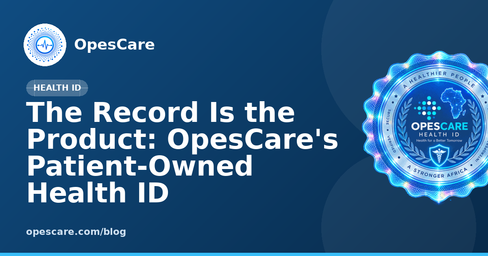

HEALTH ID
The Record Is the Product
How OpesCare turns a patient's medical identity into portable, consent-governed infrastructure for Cameroon.

In most health systems in sub-Saharan Africa, the medical record belongs to the institution that created it. Test results sit in a file at one hospital. A prescription history lives with one pharmacy. When a patient moves, the record does not come with them.
OpesCare inverts that: the patient's record is the product itself.
Preview only — not deployed. The guilloche from the Health ID card sits behind the page at low strength; the article panel stays solid for readability.